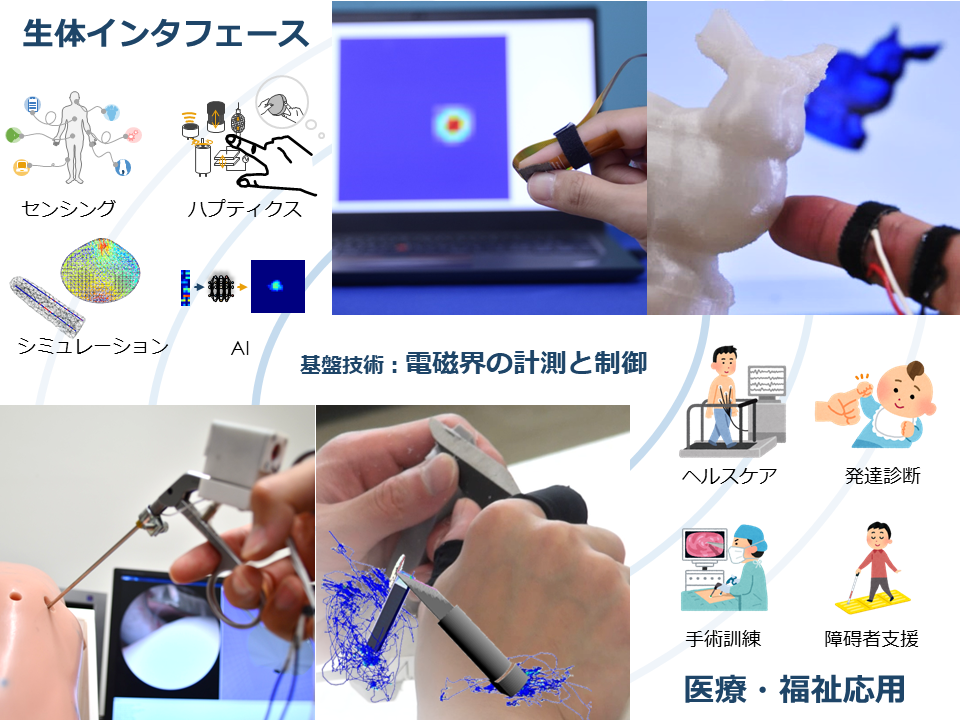
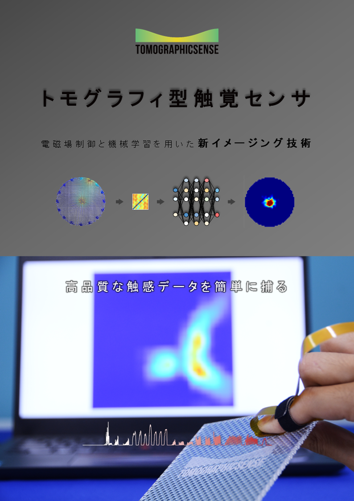

研究内容

バイタル信号や体組成，運動など人に関する情報を簡易に計測するスマートセンシングや，力触覚（ハプティクス）をはじめ感覚情報を提示するための感覚ディスプレイなど，革新的な生体インタフェースの開発を進めています．また，これらを応用することで，ヘルスケア，発達診断，手術訓練，障碍者支援など医療や福祉への貢献を目指した研究を行っています．特に，電磁トモグラフィ（電気インピーダンストモグラフィ）や電気刺激など電磁界を利用した基盤技術を培うとともに，人間の複雑で多様な特性を理解・応用することで，効果的な設計論を探求しています．

電磁トモグラフィ
TOMOGRAPHICSENSE ― 電磁トモグラフィ × センサデバイス
電磁場中に存在する物体から取得した電位情報を逆解析することで，物体の物性分布を高精度に予測することができるようになりつつあります．このような技術は電磁トモグラフィと呼ばれ，生体イメージングの分野で着目を集めています．
私たちの研究グループでは，この電磁トモグラフィ技術を様々な材料に適用することで，新たなセンサデバイスの技術，トモグラフィ型センサ (通称 TOMOGRAPHICSENSE)を培っています．
接触抵抗式トモグラフィ型触覚センサ ― 接触抵抗 × トモグラフィ
TOMOGRAPHICSENSEの一つである接触抵抗式トモグラフィ型触覚センサは，二つの導電体間の接触抵抗を接触圧力分布の検出に利用した技術です．電位分布を検出するための導電体には電極が複数取り付けられておりそのうち幾つかの電極が接地されます．もう一方の導電体には電圧が印加されており，導体間の接触状態が変化することで検出層の電位分布が変化します．各電極の電位を用いてニューラルネットワーク等により逆解析することで接触圧力分布を推定します．
トモグラフィ型触覚センサの特徴
- 任意形状に合わせた検出部の設計が可能です．
- 表面を変形させたり，センサを曲げた状態で利用することも可能です．
- 1mm以下の空間分解能，1kHzのサンプリング周波数で検出が可能です．
- 計測したい範囲に合わせて感度を調整することができます．
- 1N以下の力を計測することも，100N以上の力を計測することも可能です．
- 接触抵抗式のためドリフトが発生しません．
- 構造が単純なため，高い耐荷重性を有しています．
トモグラフィ型触覚センサのアプリケーション例
- 装着型デバイスを用いた触動作解析による技能の評価
- 人が物に触れた際の高品質な触感情報の共有
- 素材の形状や硬さ，粗さなど質感情報の定量化
- 立体曲面に搭載した多自由度ユーザ入力インタフェース
- ロボットの筐体を覆う触覚機能付人工皮膚
(c) 2015-2025 Shunsuke Yoshimoto